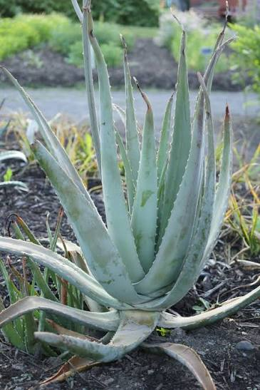
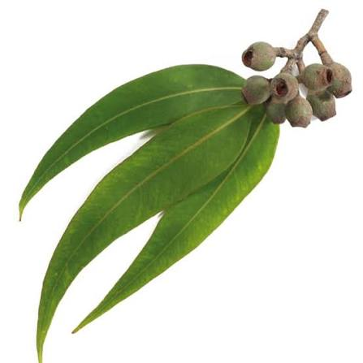
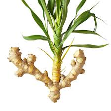
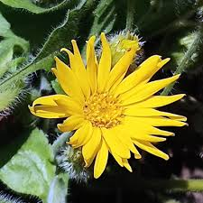
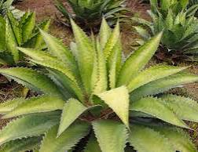
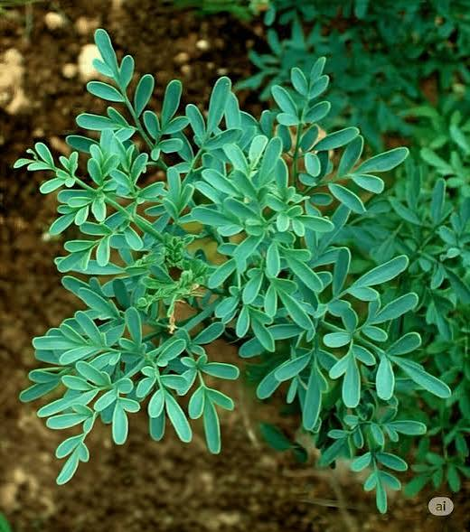
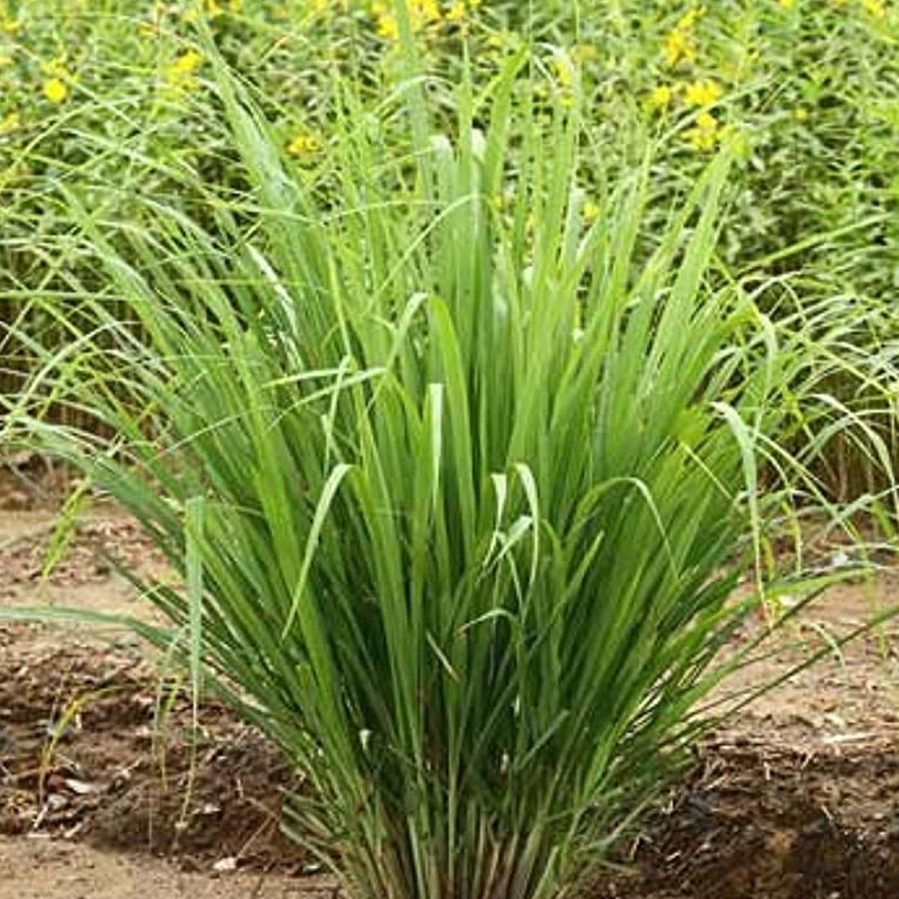
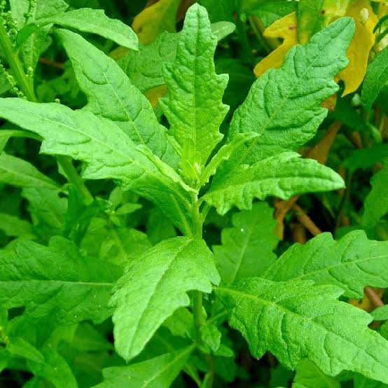
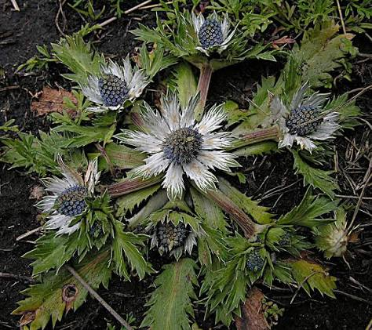
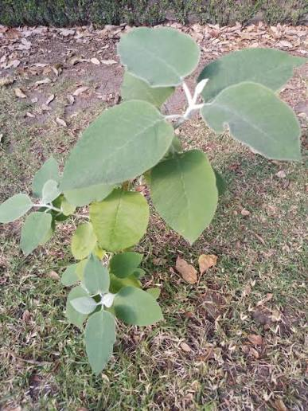

HUERTO ORGÁNICO: RESCATANDO LA MEDICINA ANCESTRAL










Este trabajo rescata el conocimiento tradicional de las plantas medicinales utilizadas en Veracruz desde generaciones.
Asesor: Ing. Leonardo Román Aguirre
Alumnos:
Cristopher Denis Rodriguez Sanchez
Luis Diego Santiago Gomez
Fernando Santiago Ramirez
Planta suculenta muy común en Veracruz, con hojas gruesas que contienen un gel transparente. Se adapta fácilmente al clima cálido y requiere pocos cuidados.
⚠️ Precaución: No consumir en exceso ni usar en heridas profundas.
Árbol de rápido crecimiento, muy cultivado en la región. Sus hojas desprenden un aroma característico por su contenido de aceites esenciales.
⚠️ Precaución: No ingerir el aceite esencial puro.
Planta cuyo uso medicinal está en su raíz, de sabor picante y aroma fuerte. Se cultiva en zonas cálidas de Veracruz.
⚠️ Precaución: Usar con moderación si tienes gastritis.
Planta con flores amarillas, conocida como "la planta de los golpes". Crece en zonas frescas del estado.
⚠️ IMPORTANTE: No consumir; es tóxica. No aplicar sobre heridas abiertas.
Planta resistente muy común en Veracruz, con hojas grandes y carnosas. Se usa desde la época prehispánica.
⚠️ Precaución: Usar solo preparada correctamente.
Arbusto pequeño de aroma muy fuerte, muy usado en los hogares veracruzanos.
⚠️ Precaución: Prohibida durante el embarazo.
Planta nativa de México, muy abundante en la región. Destaca por su agradable aroma a limón.
⚠️ Precaución: Evitar en caso de presión arterial baja.
Planta nativa de México, muy común en Veracruz. Se usa tanto en la cocina como con fines medicinales.
⚠️ Precaución: No consumir en exceso ni durante el embarazo.
Planta nativa que crece en zonas húmedas de Veracruz. Muy valorada en la medicina tradicional local.
⚠️ Precaución: Usar con moderación y consultar si tienes diabetes.
Arbusto nativo muy abundante en el estado. Se usa desde tiempos antiguos para tratar diversas dolencias.
⚠️ Precaución: No consumir en grandes cantidades.